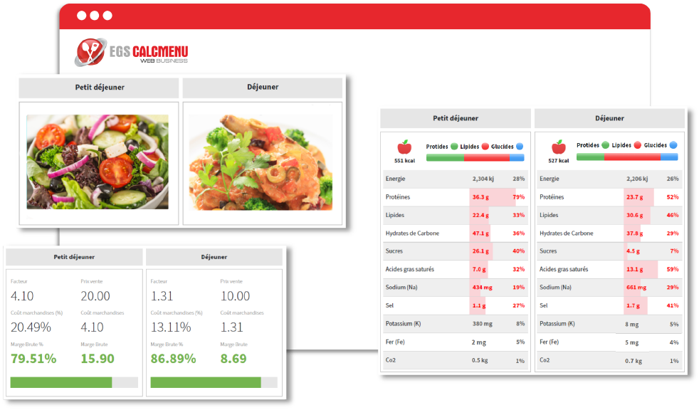

Modernisation de votre système de gestion de la cuisine
Les chefs, les restaurateurs et les professionnels de la restauration qui gèrent des recettes et planifient des menus savent qu'il s'agit d'un processus chronophage - et pourtant, c'est un facteur crucial pour le succès de leur entreprise.
La technologie étant à l'avant-garde de la croissance des entreprises, de nombreux restaurants, hôtels et traiteurs se tournent vers des solutions logicielles pour automatiser les tâches administratives quotidiennes, accroître l'efficacité des processus de production alimentaire et assurer la satisfaction globale des clients.
Que vous soyez dans le secteur de l'hôtellerie, de la restauration ou de l'alimentation, nous pouvons vous aider à intégrer et à numériser les différentes parties de vos flux de travail pour éliminer les inefficacités liées aux processus afin que vous puissiez gérer efficacement votre cuisine et améliorer vos opérations commerciales.
CHANGEZ VOTRE FAÇON DE GÉRER LES RECETTES ET LES MENUS
Vous n'avez pas le temps de gérer manuellement vos recettes pour en assurer la cohérence et la qualité ? Vous vous demandez comment déterminer les meilleurs prix de vente de vos produits alimentaires pour atteindre le succès ? Vous essayez de trouver un moyen de réduire le gaspillage alimentaire et de pratiquer la durabilité ?
Nous avons exactement ce qu'il vous faut. EGS CALCMENU Web est un logiciel avancé de gestion de recettes basé sur le web, conçu pour votre cuisine commerciale. Nous nous spécialisons dans la modernisation de la gestion des recettes pour vous aider à normaliser les recettes, à assurer leur cohérence, à déterminer l'analyse nutritionnelle, à garantir les mesures de sécurité alimentaire et à simplifier la planification des menus, pour ne citer que quelques exemples.
EGS CALCMENU Web vous fournit les bons outils pour intégrer et numériser les différentes parties de votre flux de travail afin d'éliminer les inefficacités liées aux processus. Notre cuisine centrale et nos modèles d'entreprise à succursales ou à emplacements multiples vous donnent la possibilité de normaliser les recettes et les données sur les marchandises afin de garantir une qualité constante tout en contrôlant les coûts, de créer des menus et des plans de menus rentables, de réduire le gaspillage alimentaire, de créer des étiquettes alimentaires conformes aux lois gouvernementales sur l'alimentation, et bien plus encore, pour parvenir à une gestion efficace de la cuisine.
Les entreprises comme la vôtre peuvent centraliser la gestion des recettes sur un seul serveur tout en maintenant les besoins uniques de chaque succursale, emplacement, ou ce que nous appelons "site", si vous avez besoin de plus d'un site. Les sites situés dans des lieux géographiques différents peuvent utiliser et suivre les procédures, les portions et la présentation standard pour tous vos aliments préparés.
TRAVAILLEZ MIEUX, PLUS VITE ET PLUS INTELLIGEMMENT.
Notre système de gestion de cuisine intelligent, EGS CALCMENU Web, comporte quatre modules principaux :
Marchandise
Notre module de marchandises est l'endroit où vous trouverez tous les ingrédients que vous pouvez utiliser. Vous pouvez créer et gérer toutes vos matières premières en définissant la marchandise par son nom, son numéro, sa catégorie, un nombre illimité de mots-clés, son prix dans différentes unités, son fournisseur, ses pourcentages de déperdition et son taux d'imposition.
Des images, des valeurs nutritives et d'autres informations supplémentaires peuvent également être ajoutées à la marchandise.
Recette
Grâce à ce module, vous pourrez créer de nouvelles recettes, trouver des recettes et afficher, modifier et enregistrer vos recettes préférées.
-
Gestion des Recettes
Une recette contient les détails suivants : nom de la recette, nombre illimité de mots-clés, remarques, catégorie, rendement flexible, unités (portions, litres, kg, pièces), facteur de majoration (constante, marge brute ou pourcentage du coût des aliments), procédures, date de la dernière mise à jour, taux de taxe, prix imposé, source de la recette, HACCP et autres informations supplémentaires.
Vous pouvez facilement rechercher des recettes à l'aide de mots-clés et d'autres filtres. Les recettes peuvent également être utilisées comme sous-recettes dans d'autres recettes.
Vous avez besoin de recettes imprimées ? Nous vous proposons différents modèles et formats parmi lesquels vous pouvez choisir, ou demander un modèle personnalisé* pour répondre à vos besoins spécifiques.
-
Coût de la Recette
Dites adieu au calcul manuel du coût des aliments.
Vous pouvez facilement redimensionner la recette (en modifiant la quantité de rendement) et notre application logicielle recalcule automatiquement le coût total de la préparation. En outre, chaque fois qu'un ingrédient est ajouté ou retiré d'une recette, les coûts de la recette sont automatiquement recalculés.
De plus, vous pouvez consulter le prix de vente automatique suggéré en fonction du coût alimentaire visé ou de votre marge bénéficiaire prédéfinie.
Menu
Sélectionnez et ajoutez les recettes de votre choix pour créer vos menus. Utilisez ce module pour gérer efficacement vos menus et déterminer vos analyses de ventes et de coûts.
-
Simplifiez le processus de partage des informations et de promotion de vos offres auprès de vos clients. Créez des eMenus visuellement attrayants à l'aide de nos modèles et partagez vos plats du jour ou vos menus événementiels pour les banquets.
Chargez facilement vos menus sélectionnés avec des conceptions et des mises en page prêtes à l'emploi, ou demandez un modèle personnalisé* pour répondre à vos besoins spécifiques.
Plan de Menu
Ce module vous permet d'organiser vos menus à l'avance pour une date ou une occasion donnée, de planifier vos plats du jour, de partager vos menus avec d'autres personnes, de déterminer le coût total de vos menus et de générer des listes de courses avec tous les ingrédients du plan de menus pour faciliter les achats.
Optimisez vos marges bénéficiaires grâce à la prévision des menus. Déterminez vos records de production, vos besoins en main-d'œuvre et vos décisions d'affectation et d'ordonnancement en évaluant les estimations de la demande de vos menus.
-
Vue du Plan de Menu
L'une de nos fonctionnalités avancées, Vue Plan de menu**, vous donne accès à toutes les données pertinentes et la possibilité d'afficher le contenu en temps réel pour vous aider à tracer le plan de repas parfait et équilibré avec rapidité et facilité.
Nous vous facilitons la planification des menus grâce à nos visualisations interactives qui incluent des vues pour les allergènes, les mots-clés, les nutriments, la météo, les prix, le caractère sain et durable, les photos et les règles du plan de menu.
PLUS QU'UNE SOLUTION DE GESTION DE CUISINE
Dans la quête de toujours offrir la meilleure expérience client de sa catégorie, la gestion du temps et la préparation des aliments sont des éléments essentiels d'un restaurant ou d'une cuisine commerciale bien géré.
Nos solutions vous donnent les outils appropriés pour que vos chefs et votre personnel de cuisine puissent obtenir de meilleurs résultats dans cet environnement au rythme effréné. Le chef de cuisine, les sous-chefs, les cuisiniers, les cuisiniers de ligne, le chef de cuisine et le reste du personnel de cuisine doivent être alignés de manière cohérente pour assurer le bon déroulement des opérations internes.
KIOSQUE POUR CALCMENU
Le Kiosque pour CALCMENU est fourni gratuitement avec votre licence EGS CALCMENU Web. Il s'agit d'une application légère destinée au personnel de cuisine qui doit visualiser, partager ou redimensionner des recettes. Vous pouvez également utiliser le Kiosque pour CALCMENU pour créer des listes de courses et imprimer des étiquettes.
Vous pouvez accéder au Kiosque pour CALCMENU en ligne à tout moment, où que vous soyez, depuis vos appareils mobiles et vos tablettes.
EGS F&B CONTROL
EGS F&B Control est un système back-of-house complet spécialement conçu pour l'industrie hôtelière afin d'aider les entreprises à réduire les coûts alimentaires, à maximiser l'efficacité commerciale et à augmenter la rentabilité. En optimisant la gestion des stocks, les ventes et les rapports sur les variations des coûts alimentaires, EGS F&B Control vous donne le contrôle total de votre entreprise.
VOTRE RECETTE DU SUCCÈS
Les entreprises fonctionnent selon des modèles différents et il n'existe plus de solution unique qui répondra aux besoins uniques de chaque entreprise.
C'est dans cet esprit que nous avons conçu des services personnalisés qui complètent parfaitement notre logiciel de gestion des recettes pour répondre à vos besoins spécifiques.

SERVICE DE GESTION AVANCÉE DES DONNÉES (ADMS)*
Nous éliminons la tâche fastidieuse de la saisie manuelle des données. Économisez du temps et de l'argent en laissant nos experts en données encoder vos données dans EGS CALCMENU Web, en utilisant uniquement les meilleures pratiques et stratégies de l'industrie, en profitant de notre service de gestion avancée des données (ADMS).
Avec ADMS, les ingrédients et les procédures de vos recettes sont normalisés, les erreurs sont réduites au minimum et des informations précises sur les recettes dans plusieurs langues sont fournies pour vous et votre personnel de cuisine.
*Peut être soumis à des coûts supplémentaires.
EGS CALCMENU Web regorge de fonctionnalités intelligentes conçues pour faciliter le travail dans votre cuisine professionnelle. Découvrez comment nos solutions et services avancés répondent aux besoins de votre entreprise.
Nous avons également appliqué les meilleurs systèmes avec les références les plus élevées possibles en matière de sécurité, de performance et de fiabilité.
*Sous réserve de frais supplémentaires.